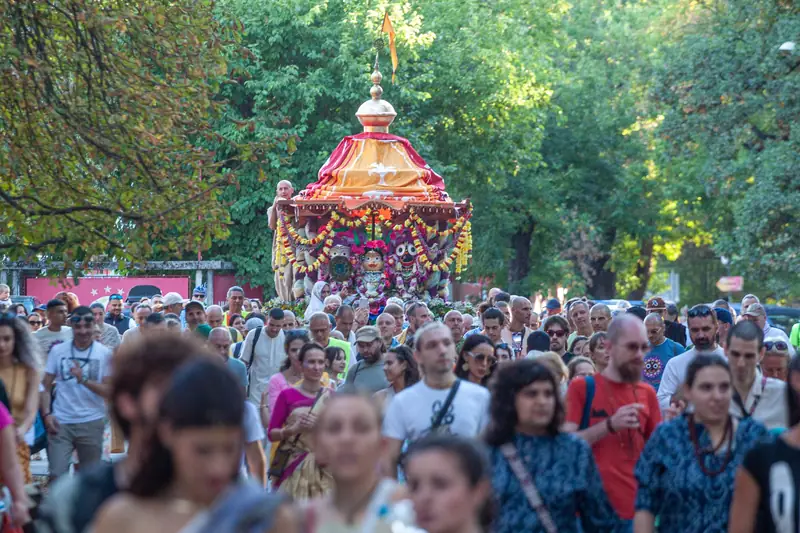
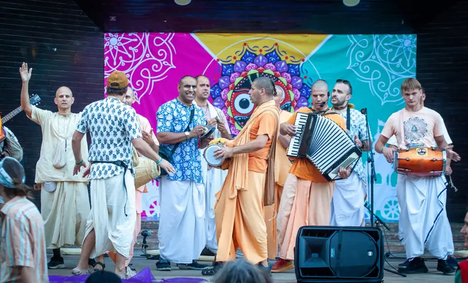
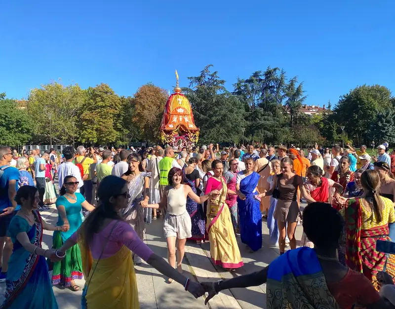

23.08.2026
31-ви Ратха ятра фестивал
Неделя, от 11:00 до 21:30, Лятната сцена в парк „Борисова градина“. Шествието с колесницата е от 15:00 до 18:30. Вегетарианска храна за всички гости.
Снимка: Ратха ятра в София, 2025
Кои сме ние
Обществото за Кришна съзнание е българското вероизповедание на Международното общество за Кришна съзнание (ИСКОН), духовно движение, основано през 1966 г. в Ню Йорк от Бхактиведанта Свами Прабхупада. То принадлежи към ваишнавизма, един от главните клонове на индийската духовна традиция, който почита единия Бог като върховна личност.
В България изповеданието присъства от 1991 г. и е регистрирано вероизповедание, самостоятелно юридическо лице с дейност в цялата страна. Нашата мисия е да съхраняваме и споделяме това древно знание чрез програми, образование, благотворителност и издаване на класическата ведическа литература.
Какво е Кришна съзнание| Традиция | Гаудия ваишнавизъм |
|---|---|
| Основател | Бхактиведанта Свами Прабхупада (1896–1977) |
| Основни текстове | Бхагавад-гита, Шримад Бхагаватам |
| Главна практика | Възпяване на маха-мантрата Харе Кришна |
| В България | вероизповедание от 1991 г. |
Храмът в София
| Ден | Работно време |
|---|---|
| Понеделник до петък | 7:30 до 9:00 и 18:00 до 18:30 |
| Събота | 7:30 до 9:00 и 15:30 до 20:00 |
| Неделя | 7:30 до 9:00 и 18:00 до 18:30 |
Адрес: гр. София, кв. „Малинова долина“, бул. „Климент Охридски“ 119. Часовете са от iskconsofia.com, проверени на 14.10.2026.

Ратха ятра
Ратха ятра, празникът с колесница, се провежда в България от 1996 г.

Неделя, от 11:00 до 21:30, Лятната сцена в парк „Борисова градина“. Шествието с колесницата е от 15:00 до 18:30. Вегетарианска храна за всички гости.
Снимка: Ратха ятра в София, 2025

Тържествено шествие с колесница, музика, песни и танци, изобилие от вегетарианска храна, курсове по йога и вечерна сценична програма. Хиляди хора преминаха през фестивала.
Снимка: Ратха ятра в София, 2025
Основател-ачаря
Негова Божествена Милост А. Ч. Бхактиведанта Свами Прабхупада (1896–1977), основателят на ИСКОН и преводач на класическата ведическа литература.
През 1966 г. в Ню Йорк основава Международното общество за Кришна съзнание. Същевременно превежда и коментира десетки томове свещени текстове, труд, който остава в основата на изповеданието и до днес.
„Книгите ще бъдат основата.“Шрила Прабхупада
Учение
Харе Кришна, Харе Кришна,Кришна Кришна, Харе Харе,Харе Рама, Харе Рама,Рама Рама, Харе Харе
Тази мантра се нарича маха-мантра, „великата мантра за освобождение“. В нея се обръщаме към Бога (Кришна и Рама) и към Неговата вътрешна духовна енергия (Харе) с молба за любящо служене. Възпяването ѝ пречиства съзнанието, успокоява ума и пробужда заспалата любов към Бога. Практикуващите я повтарят както съвместно с музика (киртан), така и тихо, броейки на молитвена броеница (джапа).
Книги
Книгите на Шрила Прабхупада, издавани от Бхактиведанта бук тръст, са основата на нашето изповедание. Открийте Бхагавад-гита, Шримад Бхагаватам и десетки други заглавия на български език.
А. Ч. Бхактиведанта Свами Прабхупада · Свещени текстове
Най-известният и почитан духовен текст на Индия: разговорът между Кришна и Арджуна, с пълен санскритски текст, превод и подробен коментар на Шрила Прабхупада. Основополагащо четиво за всеки, който се интересува от ведическата мъдрост.
А. Ч. Бхактиведанта Свами Прабхупада · Свещени текстове
„Зрелият плод на ведическото дърво на знанието.“ Многотомно издание с превод и коментар, разкриващо науката за Бога и пътя на чистата преданост.
А. Ч. Бхактиведанта Свами Прабхупада · Чайтаня
Житието и ученията на Шри Чайтаня Махапрабху, най-пълният богословски труд на традицията Гаудия ваишнавизъм.
А. Ч. Бхактиведанта Свами Прабхупада · Кришна
Разказите за деянията на Кришна, предадени достъпно и увлекателно, обобщение на Десета песен на Шримад Бхагаватам.
А. Ч. Бхактиведанта Свами Прабхупада · Бхакти йога
Наука за същината на бхакти: как да развием чиста любяща преданост към Бога. Изложение на класическия труд на Рупа Госвами.
А. Ч. Бхактиведанта Свами Прабхупада · Бхакти йога
Кратко, но дълбоко ръководство за духовния живот в единайсет стиха с коментар, практическа основа на предаността.
А. Ч. Бхактиведанта Свами Прабхупада · Свещени текстове
Една от най-важните Упанишади: знанието, което ни доближава до Върховния Бог, с превод и коментар.
А. Ч. Бхактиведанта Свами Прабхупада · Въведение
Сборник от есета и разговори, които представят основите на Кришна съзнание за съвременния читател, отлично въведение.
А. Ч. Бхактиведанта Свами Прабхупада · Въведение
Достъпни беседи за душата, съзнанието и духовния път, за всеки, който прави първите си стъпки.
А. Ч. Бхактиведанта Свами Прабхупада · Въведение
За духовната природа на съзнанието и възможността то да се издигне отвъд материалния свят.
А. Ч. Бхактиведанта Свами Прабхупада · Прераждане
Какво се случва след смъртта? Ясно изложение за душата, прераждането и пътя към освобождение.
А. Ч. Бхактиведанта Свами Прабхупада · Въведение
Разговор между Шрила Прабхупада и млад търсещ, живо въведение в духовните въпроси на живота.
А. Ч. Бхактиведанта Свами Прабхупада · Чайтаня
Същината на ученията на Шри Чайтаня Махапрабху, основата на пътя на санкиртана.
Бхактиведанта бук тръст · Кухня
За вегетарианството и духовната кухня, с рецепти за прасадам, храна, предложена на Бога.
А. Ч. Бхактиведанта Свами Прабхупада · Бхакти йога
За най-висшето и същевременно най-радостно знание, пътя на предаността, „царят на знанието“.
Бхактиведанта бук тръст · Мантра медитация
За силата на маха-мантрата Харе Кришна и практиката на медитация чрез възпяване на светите имена.
Как да поръчате: пишете ни на info@krishnabg.com или се обадете на 02 961 60 50.
За търсещите
И двете. Кришна съзнание е пълноценно монотеистично вероизповедание със свое богословие, практика и свещени текстове, което същевременно се изразява в цялостен начин на живот.
Не. Изповеданието е открито за всеки човек, независимо от произход. То не изисква приемане на чужда култура, а съживяване на вродената връзка на душата с Бога.
В един. Признаваме един-единствен Върховен Бог, който има безброй имена и форми. „Кришна“ е едно от имената Му, означаващо „всепривличащият“.
Разбира се. Лекциите, класовете и съботните програми са открити за гости. Заповядайте, за да се запознаете отблизо с традицията.
Вегетарианска храна, приготвена с грижа и предложена най-напред на Бога. Споделянето ѝ е сред най-обичаните дейности на общността.
Книгите на Шрила Прабхупада предават знанието от първоизточника. Тяхното издаване и споделяне е една от седемте цели на изповеданието.
Свържете се с нас
| Адрес | гр. София, кв. „Малинова долина“, бул. „Климент Охридски“ 119 |
|---|---|
| Телефон | 02 961 60 50 |
| Имейл | info@krishnabg.com |
| Часове | Понеделник до петък и неделя: 7:30 до 9:00 и 18:00 до 18:30. Събота: 7:30 до 9:00 и 15:30 до 20:00. |
Данни за контакт: в процес на допълване.
Обществото за Кришна съзнание (ОКС) е регистрирано вероизповедание, самостоятелно юридическо лице по Закона за вероизповеданията, с дейност в цялата страна. Присъства в България от 1991 г.
| Наименование | „Общество за Кришна съзнание“ (ОКС) |
|---|---|
| Статут | Регистрирано вероизповедание, самостоятелно юридическо лице (чл. 14–15 от Закона за вероизповеданията) |
| Съдебна регистрация | Софийски градски съд, ф.д. № 1663/2003 г. (парт. № 7, том 1, стр. 60) |
| ЕИК / БУЛСТАТ | 000681328 |
| Управление | Общо събрание · Национален съвет · Председател на Националния съвет |
| Седалище и адрес | гр. София, кв. „Малинова долина“, бул. „Климент Охридски“ 119 |
| Уебсайт | krishnabg.com |
| Обхват | цялата територия на Република България |